The itinerary
The shape of a typical day: the marquee sight in the morning while it's cool and quiet, a long unhurried lunch, then back out for the evening — Chinese cities are at their best after dark anyway. Guides handle every ticket, van, and restaurant booking, and the schedule flexes however we want it to; nobody herds us. Underlined names link to more reading; the maps have pins for everything.
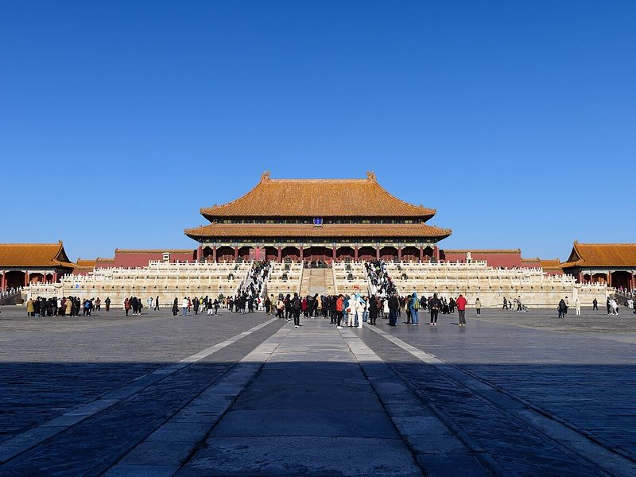
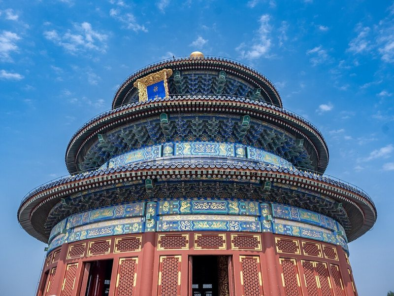
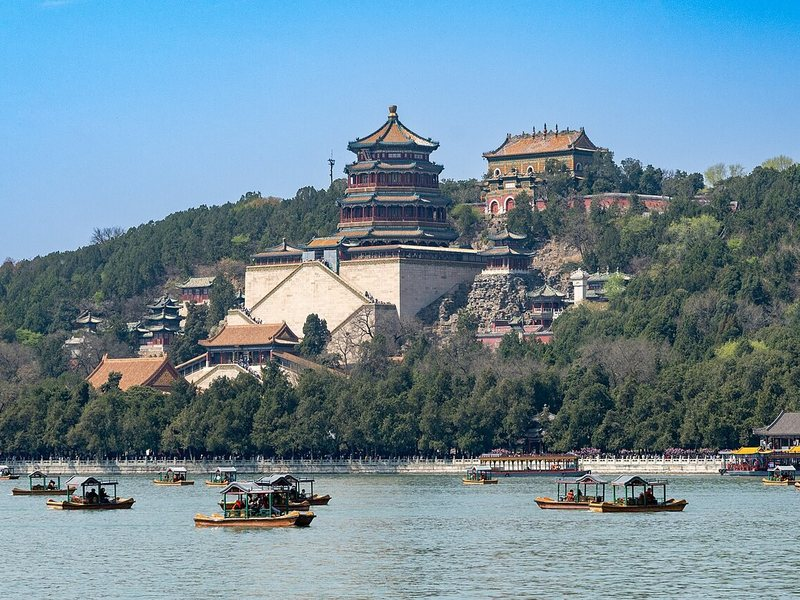
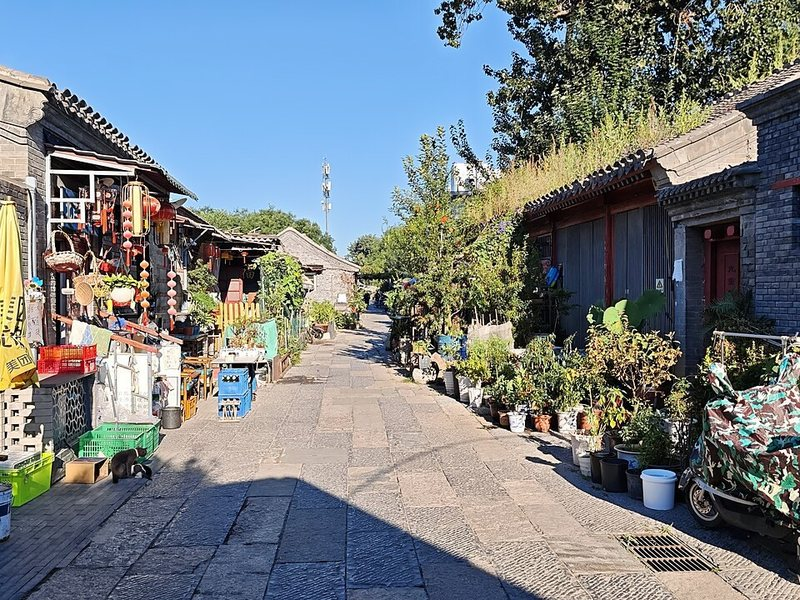
Arrive & land softly
Fly into Beijing, meet our guide, settle into the apartments. A gentle stroll through the hutongs (lane neighborhoods) and an early dinner. Jet-lag rule: plan nothing, win the day.
Tiananmen & the Forbidden City
The world's largest palace complex, the Forbidden City, walked south-to-north at opening before the heat — then straight up Jingshan hill for the postcard view over its golden roofs. Evening: Peking duck, carved tableside.
The Great Wall at Mutianyu
Private vans at 7am to Mutianyu, the most family-friendly stretch: an enclosed gondola glides everyone (Florence included) up to the towers, and the wall ripples along the ridgelines to the horizon. Evening option: the famous Chaoyang acrobatics show.
Alternate (Warren's pick): hikers can split off to Jinshanling, about 2½ hours out: a quieter, partly unrestored stretch where you walk tower to tower for 2–3 hours with a fraction of the crowds.
Temple of Heaven & the Summer Palace
7am in Temple of Heaven park is the best free show in China — tai chi, ballroom dancers, choirs — before touring the great round altar itself. Afternoon: boat across Kunming Lake at the emperors' Summer Palace.
Choose-your-own Beijing
The group splits: 798 Art District or the Military Museum's tanks-and-jets halls for some; Beihai Park pedal-boats and the hands-on Science & Technology Museum for the Florence contingent. Reunite for a hutong food tour at dusk.
Also on the menu (Warren's picks): Panjiayuan, Beijing's sprawling antiques-and-curios market (Cultural Revolution posters, Buddhist art, keepsakes; liveliest early on weekend mornings), the lakeside cafés of Shichahai by Beihai, and for night owls, Sanlitun's bars and futuristic shopping.
The bullet train west
Board the 200-mph G-train at Beijing West — 700 miles to Xi'an in about 4½ hours, watching the North China Plain give way to loess hills. (Florence's first bullet train.)

Evening: the Muslim Quarter
Off the train and straight into Xi'an's thousand-year-old Hui neighborhood: lamb skewers, pomegranate juice, biangbiang noodles, and the Drum Tower lanterns coming on at dusk.
The Terracotta Army
Eight thousand individually-faced soldiers, buried 2,200 years ago to guard China's first emperor: the Terracotta Army. First entry slot, with a guide who makes the pits come alive. Afternoon: Huaqing Palace hot-springs gardens on the way back.
Ride the city walls
Xi'an's Ming walls are intact — all 8.5 miles — and you can bicycle the top of them (tandems available, 8am before the heat). Afternoon: the Shaanxi History Museum's Tang-dynasty gold, then the Wild Goose Pagoda fountain square at dusk.
Split day: Mount Hua or mellow Xi'an
The fit and fearless take a 30-minute bullet train to Huashan — granite peaks, chain-railed cliff paths, cable cars over the void. Everyone else: Tang Paradise gardens, a dumpling banquet, and the pool.
Train east along the Yellow River valley
Suitcases ship ahead by courier; we glide 5 hours across the old Central Plains — past Luoyang and Kaifeng, capitals of a dozen dynasties — to Nanjing on the Yangtze.
Warren & Margot's option: peel off here instead and ride the bullet train southwest through the Qinling Mountains to Chengdu, about 3½ hours. See the Chengdu page.
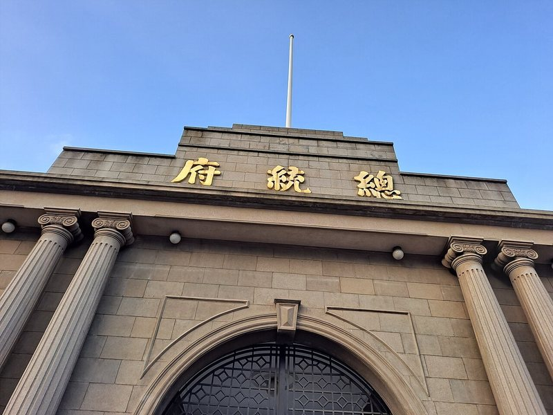
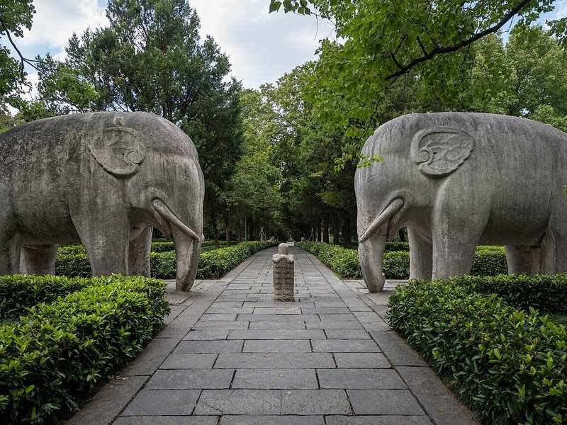
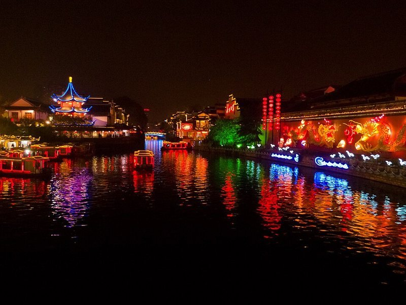
The republic's capital
Afternoon at the Presidential Palace — seat of the Republic of China, Chiang Kai-shek's office still intact — a crash course in the half-century between the emperors and Mao. Evening: the lantern-lit old lanes of Laomendong and the Qinhuai River.
Purple Mountain
Morning on the forested mountain east of town: the grand 392-step ascent to Sun Yat-sen's mausoleum, then the stone-elephant avenue of the first Ming emperor's tomb. Afternoon free. Optional for adults: the Nanjing Massacre Memorial — moving and heavy; entirely each person's call.
Onward to the garden city
A one-hour hop through the Yangtze delta to Suzhou — the "Venice of the East," where retired Ming officials competed to build the perfect garden.
Canals & a garden by lantern light
Arrive midday: I.M. Pei's jewel-box Suzhou Museum, then gelato-paced wandering on Pingjiang Road, an 800-year-old canal street. After dark: the Master of the Nets Garden's night performances — kunqu opera and guqin music drifting room to room.
The Humble Administrator's Garden
China's most celebrated classical garden, the Humble Administrator's Garden, at 7:30 opening, when it's just us, the lotus ponds, and the pavilion reflections. Then the 25-minute hop into Shanghai — and the Bund at night: the full neon skyline reveal, the trip's crescendo.
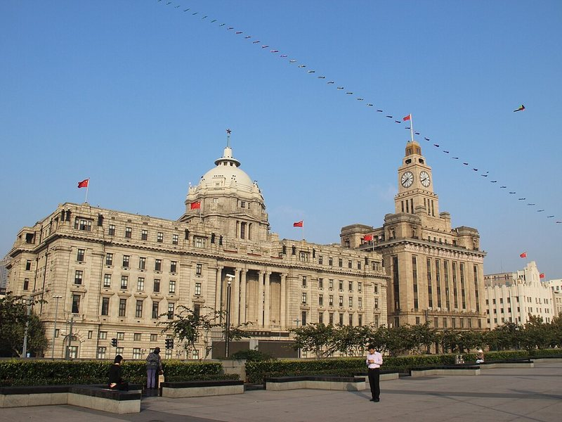
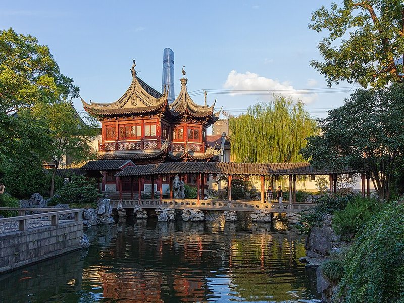
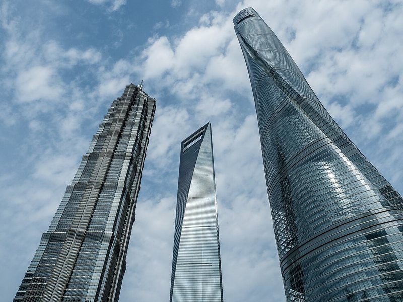
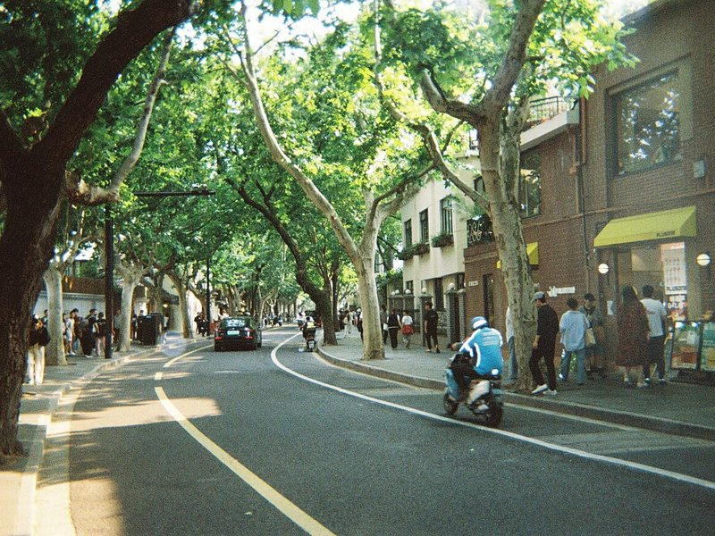
Evening: the Bund
Colonial banking palaces on one bank of the Bund, the 21st-century Pudong skyline blazing on the other — the single best before/after image of modern China, and it's just a riverside stroll.
Old Shanghai, new Shanghai
Yu Garden and the old-town bazaar early, then the Shanghai Museum's bronzes and ink paintings (or the Urban Planning Center's giant scale-model of the whole city). Sunset from the 118th-floor deck of Shanghai Tower, the world's third-tallest building.
French Concession & farewell banquet
Plane-tree lanes of the French Concession, Sun Yat-sen's house, coffee shops and dumpling counters — Shanghai at ground level. Florence option: the excellent Natural History Museum (or, dare we, Shanghai Disneyland). Farewell dinner in our own private dining room, lazy susan spinning.
Departures — by levitating train
Homeward-bound travelers ride the maglev to the airport: 267 mph, floating on magnets, seven minutes, $7. The extension crews scatter — Hangzhou for some, Chengdu for others.